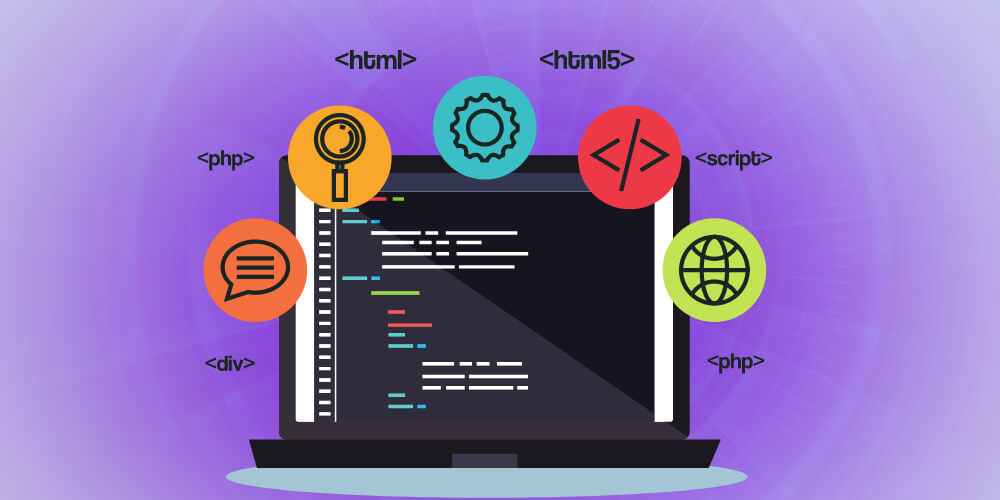

Những cú vấp đầu tiên với Front-End

Mình đến với Front-End vì thích cảm giác nhìn thấy kết quả ngay lập tức. Viết một dòng CSS – giao diện thay đổi. Thêm một đoạn JavaScript – tương tác xuất hiện. Đơn giản, trực quan, rất “đã”.
Nhưng để từ thích thú đến làm được, là cả một hành trình… vấp không ít.
😵 1. Code xong nhưng… giao diện nhìn không giống bản thiết kế
Ai từng mới học CSS hẳn đều có chung ký ức: “Sao mình căn y như vậy mà nó vẫn lệch?”.
- Padding sai 1px → giao diện lệch nguyên một block
- Font-weight không khớp → cảm giác sai hoàn toàn
- Khoảng trắng thiếu → bố cục nặng nề
CSS không khó — khó ở con mắt nhìn bố cục.
Và mắt nhìn chỉ tốt lên khi… nhìn nhiều và làm nhiều. Không có đường tắt.
📱 2. Responsive – nỗi ám ảnh đầu đời
Khi giao diện desktop có vẻ ổn, chuyển sang mobile thì: vỡ tan nát.
Căn trái, căn phải, flex, grid, v.v… đều như phản chủ.
Mãi sau mình mới biết đến tư duy Mobile First:
Thiết kế và code cho màn hình nhỏ trước → mở rộng ra lớn sau.
Mọi thứ bắt đầu vào nếp dần.
🐛 3. Debug – thứ khiến mình muốn bỏ nghề nhất
Lỗi CSS thì còn đoán được, chứ lỗi JavaScript thì… ERROR đỏ như màu cờ.
Nhưng rồi mình học được kỹ năng quan trọng nhất của lập trình: Biết cách đặt câu hỏi và tìm tài liệu.
Không ai nhớ hết code cả. Quan trọng là: biết tìm ở đâu và biết sửa như thế nào.
🌱 4. Điều khiến mình tiếp tục
Có những khoảnh khắc rất nhỏ: căn được khoảng trắng đẹp, animation mượt, hay button hover trông “đã” hơn một chút.
Chính những khoảnh khắc đó khiến mình không bỏ cuộc.
💬 Lời kết
Mỗi Front-End Developer đều bắt đầu từ những cú vấp giống nhau. Không ai giỏi ngay từ đầu.
Vấp càng nhiều, bạn càng hiểu giao diện không chỉ là code — mà là cảm giác.
Và cảm giác thì chỉ được mài từ thời gian.